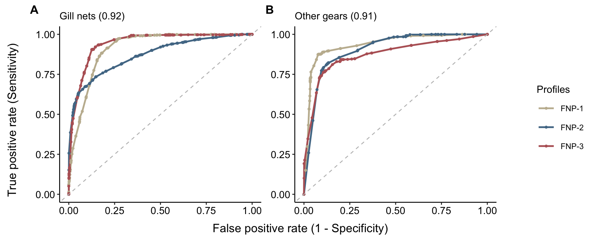

5 Timor SSF nutrient profiles
5.1 Methods
In this section, we identified recurrent nutritional profiles based on RC data. We aimed to determine the most appropriate number of distinct groups, or “clusters,” present in our dataset. To achieve this, we used the total within sum of square (WSS) to identify the point at which grouping additional data points together does not significantly improve the clarity of the clustering. Once we established the optimal number of clusters, we applied the K-means clustering method. This is a widely-used technique that organizes data into clusters based on similarity. In our case, we grouped fishing trips together if they showed similar levels of nutrient concentrations. By doing this, we were able to observe patterns and categorize the trips according to their nutritional profiles.
Then we performed a ML model to assess whether nutritional profiles were predicatable by fishing strategy. We utilized a machine learning approach, specifically employing the XGBoost algorithm. XGBoost was chosen due to its capability in handling categorical variables, such as habitat, gear type, and vessel type, which are prominent in our dataset. Additionally, its proficiency in handling categorical variables and enabling a detailed examination of predictor importance in relation to the nutritional profiles classification aligned well with our requirement to model the clusters as a categorical outcome variable.
The selection of XGBoost was also influenced by its inherent mechanisms that mitigate overfitting, an important consideration to enhance the reliability of our predictive model. The algorithm’s feature importance functionality provided an added benefit, allowing for an examination of which predictors exert the most influence on the nutritional profile clusters. This aspect was pertinent to our objective of exploring the association between fishing strategies and nutritional outcomes.
5.2 Results
5.2.1 Clusters
library(ggplot2)
df <-
timor.nutrients::kobo_trips %>%
dplyr::ungroup() %>%
dplyr::select(-Selenium_mu) %>%
rename_nutrients_mu() %>%
tidyr::pivot_longer(c(zinc:vitaminA), names_to = "nutrient", values_to = "kg") %>%
dplyr::left_join(RDI_tab, by = "nutrient") %>%
dplyr::mutate(
nutrients_kg_per_kg = kg / weight, # standardize nutrients for 1 kg of catch
nutrients_g_per_kg = nutrients_kg_per_kg * 1000, # convert stand nutrients in grams
people_rni_kg = nutrients_g_per_kg / conv_factor
) %>%
dplyr::select(landing_id, reporting_region, landing_date, vessel_type, habitat, gear_type, nutrient, people_rni_kg) %>%
tidyr::pivot_wider(names_from = "nutrient", values_from = "people_rni_kg") %>%
dplyr::mutate(quarter = lubridate::quarter(landing_date)) %>%
dplyr::select(landing_date, quarter, dplyr::everything()) %>%
# dplyr::filter(landing_period > "2019-01-01") %>%
dplyr::group_by(landing_date, quarter, vessel_type, habitat, gear_type) %>%
dplyr::summarise(dplyr::across(is.numeric, ~ median(.x, na.rm = T))) %>%
dplyr::ungroup() %>%
na.omit()
# factoextra::fviz_nbclust(df[ ,5:10], kmeans, method = "wss")
set.seed(555)
k2 <- kmeans(df[, 6:11], centers = 5, nstart = 500)
factoextra::fviz_cluster(k2,
data = df[, 6:11],
geom = c("point"),
shape = 19
) +
theme_minimal() +
scale_fill_viridis_d() +
scale_color_viridis_d() +
labs(title = "") +
theme(legend.position = "bottom")
Figure 5.1: Cluster analysis of nutrient profiles using k-means clustering. The scatter plot visualizes the distribution of data points in a two-dimensional space defined by the first two principal components which explain 39% and 26% of the variance. The convex hulls represent the boundaries of each cluster, providing a visual guide to the cluster density and separation.
clusterdf <-
dplyr::tibble(
clusters = as.character(k2$cluster),
df
)
clusterdf %>%
# dplyr::select(-weight) %>%
tidyr::pivot_longer(c(zinc:vitaminA)) %>%
dplyr::group_by(clusters, name) %>%
dplyr::summarise(value = median(value, na.rm = T)) %>%
ggplot(aes(value, reorder(clusters, value), fill = name)) +
theme_minimal() +
geom_col() +
scale_fill_viridis_d() +
coord_cartesian(expand = FALSE) +
theme(legend.position = "bottom") +
labs(x = "N. individuals meeting RNI per 1kg of catch", y = "Cluster number", fill = "")![Distribution of nutrient adequacy across k-means clusters. The bar chart represents the number of individuals meeting the Recommended Nutrient Intake (RNI) per 1kg of catch for each nutrient within different clusters. Each bar is segmented into six categories corresponding to the nutrients analyzed: calcium (dark purple), iron (blue), omega-3 (green), protein (teal), vitamin A (dark teal), and zinc (yellow). Clusters are labeled on the y-axis, indicating distinct groupings based on nutrient profile similarities derived from the cluster analysis. The x-axis quantifies the number of individuals who meet the RNI, highlighting the variation in nutritional fulfillment across clusters.](Timor-nutrient-sensitive-fisheries-management_files/figure-html/unnamed-chunk-5-1.png)
Figure 5.2: Distribution of nutrient adequacy across k-means clusters. The bar chart represents the number of individuals meeting the Recommended Nutrient Intake (RNI) per 1kg of catch for each nutrient within different clusters. Each bar is segmented into six categories corresponding to the nutrients analyzed: calcium (dark purple), iron (blue), omega-3 (green), protein (teal), vitamin A (dark teal), and zinc (yellow). Clusters are labeled on the y-axis, indicating distinct groupings based on nutrient profile similarities derived from the cluster analysis. The x-axis quantifies the number of individuals who meet the RNI, highlighting the variation in nutritional fulfillment across clusters.
# generate data for ML model
clusterdf %>%
dplyr::mutate(habitat_gear = paste(habitat, gear_type, sep = "_")) %>%
dplyr::select(quarter, habitat_gear, habitat, gear_type, vessel_type, cluster = clusters) %>%
readr::write_rds(file = paste0(system.file("model-outputs", package = "timor.nutrients"), "/ml_data.rds"))5.2.2 XGBoost model
df_field <-
readr::read_rds(paste0(system.file("model-outputs", package = "timor.nutrients"), "/ml_data.rds")) %>%
dplyr::mutate_all(as.factor)
# DataExplorer::plot_intro(df)
# DataExplorer::plot_bar(df)
# splitting and resampling
set.seed(234)
df_split <-
df_field %>%
rsample::initial_split(prop = 0.8, strata = cluster)
train <- rsample::training(df_split)
test <- rsample::testing(df_split)
# Cross validation folds from training dataset
set.seed(567)
folds <- rsample::vfold_cv(train, strata = cluster)
# pre- processing
cust_rec <-
recipes::recipe(cluster ~ ., data = train) %>%
# update_role(customerID, new_role = "ID") %>%
# step_corr(all_numeric()) %>%
recipes::step_corr(recipes::all_numeric(), threshold = 0.7, method = "spearman") %>%
recipes::step_zv(recipes::all_numeric()) %>% # filter zero variance
# recipes::step_normalize(recipes::all_numeric()) %>%
recipes::step_integer(recipes::all_nominal())
# define model
xgb_spec <- parsnip::boost_tree(
trees = 500,
tree_depth = hardhat::tune(),
min_n = hardhat::tune(),
loss_reduction = hardhat::tune(), ## first three: model complexity
sample_size = hardhat::tune(),
mtry = hardhat::tune(), ## randomness
learn_rate = hardhat::tune() ## step size
) %>%
parsnip::set_engine("xgboost") %>%
parsnip::set_mode("classification")
# Passing to workflow formula and Model specification
xgb_wf <-
workflows::workflow() %>%
workflows::add_formula(cluster ~ .) %>%
workflows::add_model(xgb_spec)
# tuning
xgb_grid <- dials::grid_latin_hypercube(
dials::tree_depth(),
dials::min_n(),
dials::loss_reduction(),
sample_size = sample_prop(),
dials::finalize(dials::mtry(), train),
dials::learn_rate(),
size = 20
)
#doParallel::registerDoParallel(cores = 6)
#set.seed(891)
#xgb_res <- tune::tune_grid(
# xgb_wf,
# resamples = folds,
# grid = xgb_grid,
# control = tune::control_grid(save_pred = TRUE)
#)
#readr::write_rds(xgb_res, file = paste0(system.file("model-outputs", package = "timor.nutrients"), "/xgb_res.rds"))
# dysplay tuning parameters
# xgb_res %>%
# tune::collect_metrics() %>%
# dplyr::filter(.metric == "roc_auc") %>%
# dplyr::select(mean, mtry:sample_size) %>%
# tidyr::pivot_longer(mtry:sample_size,
# names_to = "parameter",
# values_to = "value"
# ) %>%
# ggplot(aes(value, mean, color = parameter)) +
# geom_point(show.legend = FALSE) +
# facet_wrap(~parameter, scales = "free_x")
# tune::show_best(xgb_res, "roc_auc")
# select best tune
xgb_res <- readr::read_rds(paste0(system.file("model-outputs", package = "timor.nutrients"), "/xgb_res.rds"))
best_auc <- tune::select_best(xgb_res, "roc_auc")
final_xgb <- tune::finalize_workflow(xgb_wf, best_auc)
# final_xgb %>%
# fit(data = train) %>%
# hardhat::extract_fit_parsnip() %>%
# vip::vip(geom = "point")
# fit
final_rs <- tune::last_fit(final_xgb, df_split,
metrics = yardstick::metric_set(accuracy, roc_auc, sens, spec)
)
# final_rs %>%
# tune::collect_metrics()
cmat <-
final_rs %>%
tune::collect_predictions() %>%
yardstick::conf_mat(cluster, .pred_class)
# show roc curves
final_rs %>%
tune::collect_predictions() %>%
yardstick::roc_curve(cluster, c(.pred_1:.pred_5), event_level = "second") %>%
ggplot(aes(1 - specificity, sensitivity, color = .level)) +
theme_minimal() +
geom_line() +
# geom_point()+
scale_color_viridis_d() +
labs(color = "cluster")
# show auc value
final_rs %>%
tune::collect_predictions() %>%
yardstick::roc_auc(cluster, c(.pred_1:.pred_5)) %>%
janitor::clean_names() %>%
dplyr::mutate(estimate = round(estimate, 2)) %>%
knitr::kable()| metric | estimator | estimate |
|---|---|---|
| roc_auc | hand_till | 0.86 |